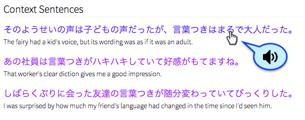

GitHub Projects
GitHub Projects
WaniKani Enhanced Mobile Design Userscript
Overwrites existing mobile viewport CSS stylings of wanikani.com in review and lesson mode, making the site more mobile-friendly.
WaniKani Clickable Popover & Study Assistant Userscript
On WaniKani reviews and lessons, shows reading & translation info in a popover when hovering over quiz kanji/vocab words. Also provides a clickable link to jisho.org for the relevant quiz item.

WaniKani Audio for Japanese Example Sentences Userscript
Adds audio talkback support in male and female Japanese voices to example sentences on WaniKani lessons and reviews.

WaniKani Kanji Recognition Study Tool Incomplete
A tool based on WaniKani to help you practice recognizing kanji visually.